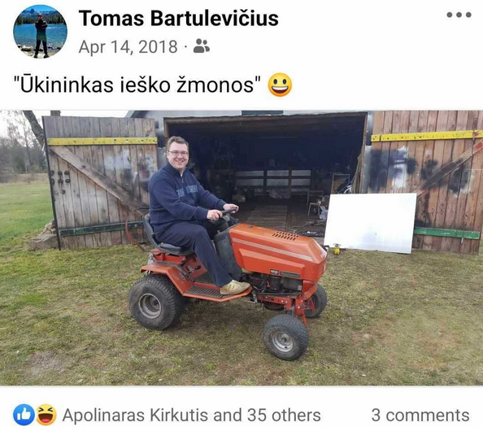

JUSTINA IR TOMAS
Patvirtinkite Dalyvavimą
Maloniai kviečiame jus dalyvauti mūsų šventėje. Prašome užpildyti formą ir pranešti, ar galėsite prisijungti.
Patvirtinti DalyvavimąSveiki atvykę į mūsų vestuvių virtualius namus!
Mieli mūsų artimieji ir bičiuliai, mes labai džiaugiamės galėdami su Jumis pasidalinti artėjančios mūsų šventės detalėmis bei laukimu! Tikimės, kad ši virtuali kelionė po mūsų būsimą šventę nuteiks pozityviai ;)
Po 7 metų...
Kada? Kur? Kaip?
Data ir laikas:2025-08-30, 16:00
Šventės eiga (preliminariai, gali keistis):
Ceremonijos pradžia - 16:00
Sveikinimai - 17:00
Vakarienė - 18:30
Vakaro programa - iki paryčių :)
Išvykimas - sekmadienį iki 16:00
Kur?
Vieta - Keliautojų namai
Trakų raj. Kirmėliškių 4, LT-21101
Kaip?
Jums kyla klausimų, kaip atykti į vietą? Neturite...


D.U.K
| Ar aš turėsiu kur miegoti? | Taip, visi iki vieno turės miegojimo vietą. |
| Ar man atvykti anksčiau? | Rekomenduojama atvykti ne anksčiau nei pusvalandis, geriausiai 15 min. Iki ceremonijos pradžios. |
| Kur man pasidėti daiktus? | Šventės vedėjas informuos, kada bus laisvas laikas ir jūs galėsite pasidėti daiktus priskirtuose kambariuose. |
| Kaip turėčiau apsirengti? | Šventės stilius - puošnumas be griežto oficialumo. Šventės vietoje teks pasivaikščioti per pievą, todėl aukštakulnių smailais kulnais geriau neavėti. Aprangos stilius nėra griežtas, jauskitės sau gražūs ir turėkite papildomą avalynę, jei kojos pavargtų nuo šokių 😊. |
| Ar aš gausiu normaliai pavalgyti? | Šventėje bus ir karšta vakarienė, ir užkandžiai, ir desertai, ir karšti pusryčiai - tikimės, jog nieko netruks. |
| Ką Jums atvežti dovanų? | Jei norėsite mus palepinti dovanomis, tai tegul jos telpa į vokelį 😊. Jei norisi, galite pridėti kažką valgomo 😃. Prašome nevežti gėlių bei gėrimų. |
| Ar man reikia pasiruošti kalbą, sveikinimus, tostus? | Šventės metu jūs turite pilną laisvę daryti, kaip norite - jei norėsite sakyti tostus ar sveikinimus - pasisakykit šventės vedėjui ir jis suderins laiką bei vietą. Bet iš esmės jums nieko ruoštis nereikia, niekas jūsų nevers kažko sakyt ar nesakyt 😊 |
| Ar šventėje gali dalyvauti vaikai? | Šventėje vaikams pramogų, atskirų vietų ar specialaus meniu nebus, todėl ne kūdikius/ labai mažus vaikus palikite su kuo nors smagesniu. |